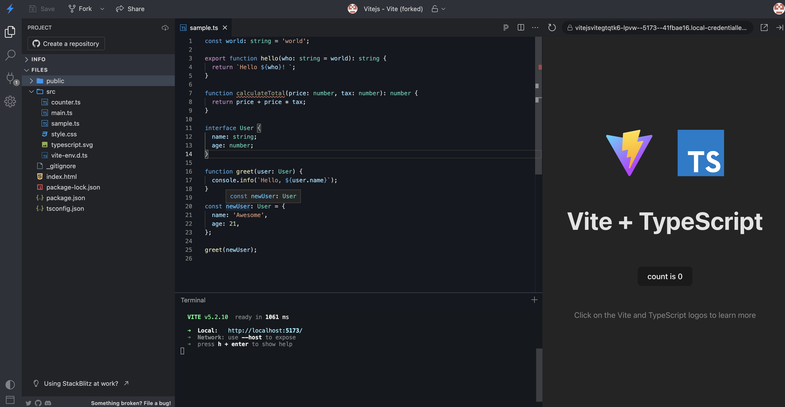

IDE Support page
Learn about good IDEs for TypeScript development.
Overview
In this section, we’ll look at IDEs that have great TypeScript support for building TypeScript projects.
IDEs
Integrated Development Environments (IDEs) have come a long way in supporting modern web development. With little to no configuration, IDEs offer built-in debugging, git integration, command line usage, and robust packages for additional add-ons.
Visual Studio Code
Visual Studio Code (VS Code) is Microsoft’s modern take on an IDE for app development (p.s. TypeScript is a Microsoft open source project). VS Code has built in TypeScript support for syntax highlighting, IntelliSense code completion, and linting.

WebStorm
WebStorm is a platform by JetBrains that is loved for its great code refactoring assistance and version control integration, but it does require a paid subscription.

StackBlitz
StackBlitz is a web IDE that’s quick to set up. It can be run entirely from the browser and it provides features such as linting, code suggestions, etc. You can start a project easily, but you’ll need to sign in with a GitHub account to save your work.

Next steps
Next, let’s set up your local environment and create a new TypeScript project.